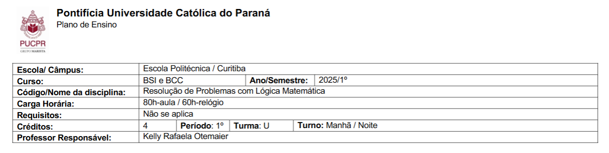

Trabalhos de resolução de problemas com lógica matemática
Esta disciplina, destinada aos estudantes de 1º período de Bacharelado em Ciência da Computação e Bacharelado em Sistemas de Informação, trata de lógica matemática computacional. Ao longo da disciplina, o estudante modela problemas estruturados do mundo real, criando representações e utilizando linguagem lógica. Ao final da disciplina, o estudante é capaz de resolver problemas do mundo real, selecionando adequados métodos de dedução e de provas matemáticas. Tendo isso em mente, a maior parte dos trabalhos enviados foram listas, que estão para download abaixo:

Lista 6 questão 2
Aqui está um exemplo de como são feitas as listas e como trabalhamos sequências lógicas: